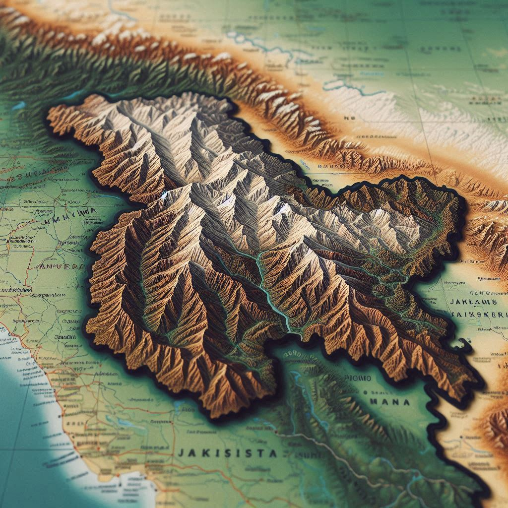
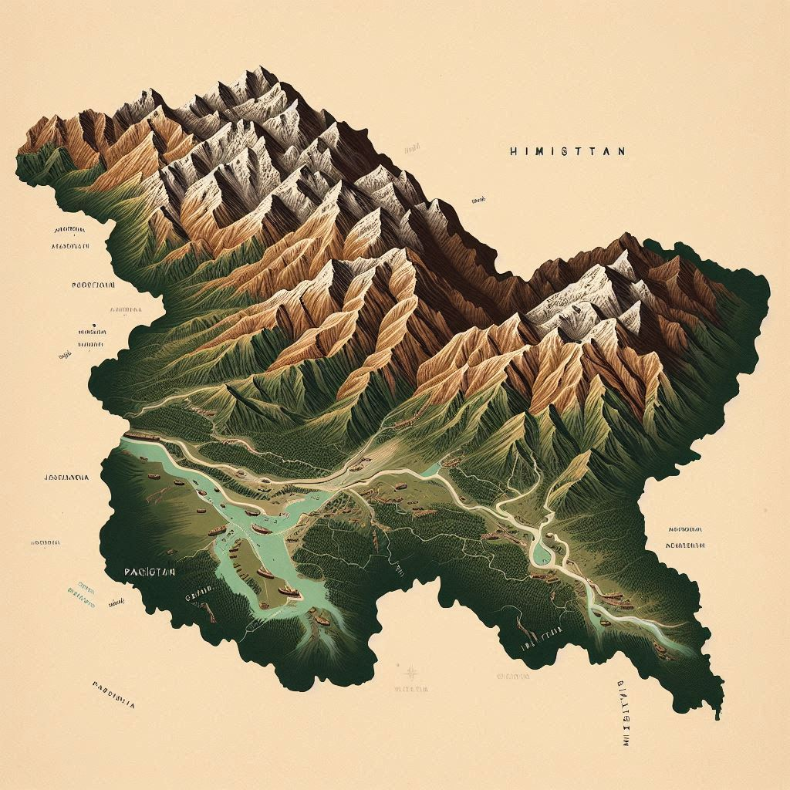

Jammu and Kashmir, often referred to as "Paradise on Earth," is located in the northern part of India. It is bordered by the union territories of Ladakh to the east and Himachal Pradesh and Punjab to the south. The geographical coordinates of Jammu and Kashmir lie approximately between 32°17′N to 37°5′N latitude and 72°40′E to 80°30′E longitude.
1. Location and Borders
- North and East: Jammu and Kashmir share a border with China.
- Northwest: It shares a border with Pakistan-occupied Kashmir (PoK).
- South: The region is bordered by the Indian states of Himachal Pradesh and Punjab.
2. Topography
Jammu and Kashmir are characterized by a diverse landscape, ranging from snow-capped mountains, deep valleys, and glaciers to lush green plains and pristine rivers. The region has three distinct areas:
- Jammu Region: Located in the southern part of the territory, this region is primarily hilly and plain. It is known for its temples, religious diversity, and subtropical climate.
- Kashmir Valley: Renowned for its scenic beauty, it lies between the Pir Panjal range and the main Himalayan range. The valley is famous for its breathtaking landscapes, gardens, lakes like Dal Lake and Wular Lake, and traditional wooden houseboats.
- Ladakh: A cold desert situated at a high altitude, Ladakh is characterized by barren mountains, glaciers, and unique Buddhist culture.
3. Climate
- Jammu experiences a subtropical climate with hot summers and mild winters.
- Kashmir has a temperate climate with four distinct seasons: spring, summer, autumn, and winter, marked by heavy snowfall in winter.
- Mountain Ranges: The region is surrounded and intersected by several mountain ranges, including the Great Himalayas, Pir Panjal, and the Zanskar range.


4. Rivers and Lakes
Jammu and Kashmir are crisscrossed by rivers, with the Jhelum River being the lifeline of the Kashmir Valley. Other significant rivers include the Chenab, Tawi, and Indus. The region is also home to numerous lakes like Dal Lake, Wular Lake, and Manasbal Lake, which add to its beauty and support its economy.
5. Strategic Importance
The union territory's location at the northern tip of India, along the sensitive borders with China and Pakistan, makes it strategically significant from a geopolitical perspective.
Conclusion
Jammu and Kashmir’s unique geography, with its towering mountains and lush valleys, contributes significantly to its natural beauty and diverse culture, drawing tourists, trekkers, and pilgrims from across the globe.